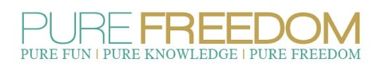

Lifeline Pregnancy Help Clinic offers this free 3-day abstinence education program, ideal for health classes. Pure Freedom is open to all area middle and high schools.
Pure Freedom:
- Addresses issues such as drug and alcohol use, peer pressure and unhealthy relationships, and other behaviors that might affect student success.
- Is fun, interactive and insightful
- Has been reviewed and approvedby thousands of teachers, trainers and students.
- Is remarkably relevant and helpful to every student in class—both those who have and have not been sexually active.
To schedule, contact Sarah Hodges, Abstinence Educator at lifelinepurefreedom@gmail.com
The students “wanted and needed help with how to develop and
sustain healthy relationships—not the specifics of proper condom
usage.”
-Joneen Mackenzie, RN, BSN President/Founder of W.A.I.T